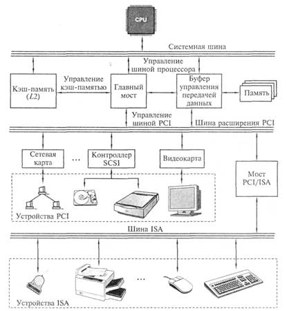

Подготовка к экзамену по ТСИ
Устройство и принцип действия ЭВМ
Архитектура Фон-Неймона

Взаимодействие основных устройств компьютера реализуется в определенной последовательности. В память компьютера вводится программа с помощью какого-либо внешнего устройстав. Память компьютера состоит из некоторого числа пронемерованных ячеек. В каждой ячейке могут находится данные или инструкции программ. Номер(адрес) очередной ячейки памяти из которой будет извлечена следующая команда программы укащывается спец устройством, счетчиком комманд в УУ. УУ считывает содержимое ячейки памяти где находится первая команда программы и организует ее выполнение. Как правило после выполнения одной из команды УУ начинает выполнять команду из ячейки памяти которая находится непосредственно за ячейкой, содержащей только что выполненную команду.
УУ выполняет инструкции программы автоматически и может обмениваться инфорамцией с ОЗУ, а также внешними устройстави. По скольку ВУ работают значительно медленнней чем остальные части компьютера, УУ может приостанавливать выполнение программы до завершения операции ввода/вывода с ВУ. Все результаты выполненной программы до завершения операции должны быть выведены на ВУ, после чего компьютер переходит в режим ожидания каких-либо внешних сигналов от устройств.
Схема устройст современных компьютеров несколько отличается от приведенной выше, например АЛУ и УУ соединены в единое устройство которое называется центральный процессор(ЦП). Именно с третьего поколения ЭВМ был переход от вычислительных элементов транзисторов к интегральным микросхемам. В них не только были значительно уменьшенные размеры базовыз функционльныз узлов, но и появилась возможность сущecтвенно повысить быстродействие процессора. С появлением такой возможности возникло противоречие между высокой скоростью обмена информации внутри компьютера и медленной работой устройств ввода/вывода. Решение проблемы было найдено путем освобождения процессора от функции обмена и передачи их спец. электр. схемам управления работы внещних устройств.
Такие схемы имели различные названия, каналы обмена, процессы ввода/вывода, переферийные процессора. Все чаще используется термин "контроллер внещнего устройства. Контроллер можно представить как специальзированный процессор, который управляет работой какого-либо ВУ по специальным встроенным программам обмена. Например контроллер дисковода обеспечивает позиционирование головки чтения или записи информации. Дальнейший обмен информацией происходит без участия процессора под руководством контроллера. В каждом контроллере существуют внутренние регистры памяти, в которые заносятся результаты выполнения каждой операции и данная информация в дальнейщем может быть прочитана процессором
Наличие таких интелектуальных контроллеров стало отличительной чертой III и IV поколения ЭВМ. А такая компьютерная архитектура называлась шинной архитектурой. Где для связи между отдельными функциональными узлами используется общая магистраль - шина состоящая из 3-х частей:
- шина данных
- шина адреса
- шина управления
Шинная архитектура

На некоторых моделях шины данных адреса объеденены. На шину сначала выставляется адрес, а потом данные. Сигналы по шине управления определяют для какой цели используется шина в каждый конкретный момент времени. Такая открытость архитектуры позволяет пользователю свободно выбирать состав внешних устройств, т.е конфигурировать компьютер.
Процессор, представляет собой функционально законченное устройство и является основным устройством ПК. Процессор выполняет обработку информации. Он выполняет вычисления по хранящейся в запоминающем устройстве программе и обеспечивает общее управелние компьютером
Память, содержит обрабатываемые данные и выполняемы программы, которые поступабт через устройства ввода/вывода. Память представляет собой сложную структуру, построенную по иерарзическому принципу, состоящему из запоминающих устройств различных типов.
Функционально она делится на две части: внутреннюю и внешнюю.
Внутренняя - запоминающее устройство напрямую связанное с процессором и предназначенное для хранения выполняемых программ и данных, которые непосредственно участвуют в вычислениях. Обращение к внутренней памяти осуществляется с высоким быстродействием, но она имеет ограниченный объем, который определяется системой адрессации машины. В свою очередь внутренняя память делится на оперативную (ОП) и постоянную (ПЗУ).
Постоянная память, обеспечивает хранение и выдачу информации. Содержимое постоянной памяти заполняется при изготовлении компьютера и неподлежит изменению в обычных условиях. В постоянной памяти хранятся часто используемые (универсальные) программы и данные, а также некоторые программы операционной системы, программы тестирования ПК и другие.
При включении питания содержимое ПЗУ сохраняется. Такой вид памяти сокращенно называется ROM. Значительная часть программ хранящихся в ПЗУ связанна с обслуживанием ввода/вывода компьютера, поэтому ее часто называют ROM BIOS.
BIOS - basic input output system, обеспечивает тестирование устройств, а также некоторую надстройку первичного оборудования.
Оперативная память, по объему составляет большую часть внутренней памяти. Служит для приема, хранения и выдачи информации. При выключении питания содержимое ОП в большинстве случаев уничтожается. Память называется оперативной потому что работает так быстро что процесс его практически не приходится ждать при чтении данныъ и их записи. ОП обозначается RAM (random access memory). В большенстве своем, объем установленной ОП определяет с каким ПО можно работать. При недостатке ОП некоторые программы либо не будут работать либо будут работать крайне медленно.
Кэш-память - сверх быстродействующая память которая обеспечивает ускорение доступа к ОП, она распологается между ОП и процессором и хранит копии наиболее часто испоьзуемых участков ОП, при обращении микропроцессора к памяти сначала происходит поиск данных в КЭШ-памяти. Зачастую необходимые микропроцессору данные уже хранятся в КЭШ-памяти поэтому среднее время доступа уменьшается.
CMOS-RAM - участок памяти для хранения параметров конфигурации компьютера. Из названия следует, что память эта выполнена по технологии CMOS, т.е. память с низки электропотреблением. Содержимое данной памяти не изменяется при выключении ПК, а питание ее осуществляется специальным аккумулятором. Именно в данной памяти содержится программа настройки конфигурации компьютера BIOS.
Видеопамять, предназначенна для хранения изображений выводимых на экран. Обычно эта память входит в состав видеоконтроллера, электронной схемы которая управляет выводом изображения на экран.
Внещняя память предназначенна для размещения больщиз объемов информации и обменом ей с ОП. Для построения ВП используют энергозависимые носители информации: диски (жесткие, гибкие), ленты, флеш-память и тд. Емкость внешней памяти практически не имеет ограничения, но для обращения к ней требуется больше времени чем к внутренней памяти.
Внешняя память по принципам функционирования подразделяется на устройства прямого доступа и устройства последовательного доступа. Устройства прямого доступа обладают большим быстродействием поэтому они являются основными внешними устройствами. Устройства последовательного доступа, в основном применяются в системах резервирования.
Устройства ввода/вывода служат для обеспечения общения пользователя с ПК и относятся к переферийным или внещним устройствам
Сам по себе компьютер не обладает никакими знаниями все знания сосредоточены в ПО.
Системные программы - выполняют функции обеспечения нормальной работы компьютера, его обслуживания и настройки
Основным системным ПО является ОС котоорая состоит как минимум ищ 3-х обязательныз частей:
- Ядро - коммандный интерпретатор. Обеспечивает перевод с программного языка на язык програмных кодов.
- Драйвера - программные алгоритмы для работы с теми или иными устройствами.
- Интерфейс - графическое устройство для удобной работы с ПК.
Утилиты - комплекты полезных программ предназначенных для обслуживания и совершенствования работы ПК.
Прогрманые тестеры - предназначенны для тестирования ПО
Прикладные программы - обеспечивают непосредственное выполнение пользователем работ.
Самоконтроль
Материнская плата
Струтура и стандарты шин ПК
Архитектура шины PCI
Шина PCI была разработана Intel для процессоров pentium и представляля собой совершенно новую шину. В ней был заложен принцип применения мостов, которые осуществляли связь мужде шиной PCI и другими типами шин. В шине PCI есть Bus Mastering, тоесть способность внешнего устройства управлять шиной при перессылке данных без участия процессора, тем самым позволяет процессору сосредоточится на других задачах пока происходит процесс перессылки. В современных материнских платах тактовая чистота PCI задаётся как половина тактовой частоты системной шины. Если системная шина 66 Ггерц, то PCI 33 Ггерц соответственно. В наше время данная шина стала стандартом среди шнин ввода-вывода.
Архитектура шины USB

Шина USB созданна для подключений переферийных устройств вне корпуса скорость обмена информацией по шине USB составляет от 12 мб до 40 гб в зависимости от версии. С помощью USB можно подлючать такие переферийные устройства, как мышь, клавиатура, принтер и т.п. при этом нет необходимости выключать питание компьютера.
Шина поддерживает технологию plug and play, что позволяет при подключении устройства его автоматичесски определять и регулировать. Благодаря специальным расширяющим USB устройствам - USB хабам, к компьютеру можно подключить до 127 периферийных устройств.
Шина SCSI с подключенными устройствами

Шина SCSI обеспечивает скорость передачи данных до 320 мб/с.Она предусматривает подключение до 8 устроит: привод cd rom, жесткие диски, сканеры т.д. Отличительной особенностью является то, что она представляет собой кабельные шлейп с другими шинами. Она связана через хост адаптер, каждое устройство подключенное шиной имеет свой идентификационный номер(ID). Любое устройство подключенное к шине может инициировать обмен с другим устройствами. Существует широкий диапазон версии шины начиная от 1 версии, которая обеспечивала пропускную способность 5 мегабайт в секунду и заканчивая последней Ultra 320 с пропускной способностью 320 мб/с.
Последовательные и паралельные порты
Последовательный порт (интерфейс) данные в нем передаются на друг за другом по видно используются лишь одна сигнальная линия на передачу групп битов отводится свой кван времени (интервал) в качестве примера последовательного интерфейса - USB шина, шина PSI-E, сетевого подключения для локальных и глобальных сетей. В последовательном интерфейсе скорость передачи данных ниже, чем в параллельном, при такой передаче данных возможен обмен данными в двух направлениях при этом прием и передача данных осуществляется с одинаковой тактовой частотой. Для установления связи между двумя последовательными интерфейсами необходимо предварительно сконфигурировать их, то есть указать, как будет осуществляться обмен данными. Обычно конфигурирование осуществляется автоматически. Параллельный интерфейс для каждого бита передаваемой группы используется своя сигнальная линия и все биты группы передаются одновременно за один квант времени. В качестве примера SCSI - шина PCI и группа интерфейсов АТА. На первый взгляд организация параллельного интерфейса проще и нагляднее. Недостатком интерфейса является большое количество проводов и контактов в разъемах в соединительном кабеле. Отсюда громоздкость и дороговизна кабелей, а также самих интерфейсных цепей.
Самоконтроль
- Что вы знаете о шине SCSI.
- Объясните как работает последовательный и паралельный порты.
Процессоры
Основные характеристики процессора
Процессор - это основная вычислительное устройство компьютерной системы является "сердце" материнской платы, поскольку находится в постоянном взаимодействии с другими элементами материнской платы пока компьютер включен. Лидерами производства процессоров являются Intel и AMD.
Процессоре подразделяются по типам: обозначения процессора начинается с цифры 80 числа,затем следуют 2 или 3 цифры, которые при необходимости дополняются буквами и цифрами указывающими на тактовую частоту процессора. Перед обозначением типа процессора чаще всего сокращение идентифицирующий изготовителя. Например i80486DX-50 данная маркировка указывает на Intel. На любом процессорном кристалле
- Процессор - состоит из транзисторов.
- Сопроцессор - спецблок для операций с плавающей точкой, применяется для особо точных расчетов, а также для работы с графикой.
- Кэш память 1 уровня сверх быстродейственная память, предназначена для хранения промежуточных данных.
- Кэш память 2 уровня.
- 1. Степень интеграции.
- 2. Разрядность обрабатываемых данных.
- 3. Тактовая частота.
- 4. Память к которой может адресоваться процессор.
- 5. Объем установленной кэш памяти.
Степень интеграции показывает какое число транзисторов в микросхеме умещается. Если в чипе процессов первого поколения размещалось около 3000 транзисторов, то в современных около миллиарда.
Разрядность обрабатываемых данных определяется количеством бит информации, которые процессор может обработать одновременно 16, 32, 64 bit.
Тактовая частота процессора определяется частотой работы тактового генератора который синхронизирует работу. Частота работы тактового генератора в мегагерцах. Первые ПК имели 1 тактовый генератор с частотой 8 мегагерц. Он синхронизировал работы процессора, памяти, шины ввода вывода. Современных процессорах имеется несколько тактовых генераторов работающих синхронно на разных частотах.
Объем памяти который может адресовать сопроцессор определяется объемом оперативной памяти персонального компьютера. Процессоры первого поколения имели максимальный объем адресованной памяти 1 мб. Процессоры 6, 7 поколения 64 ГБ.